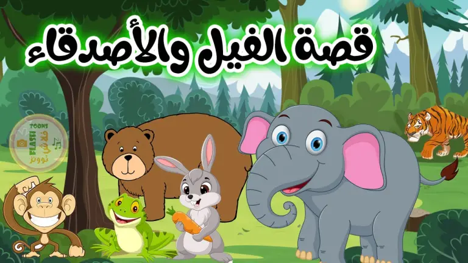
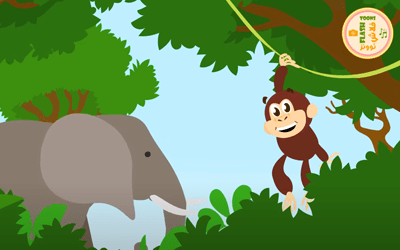
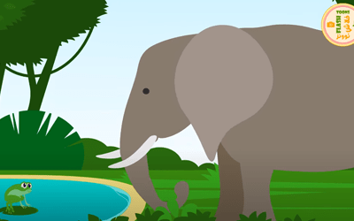
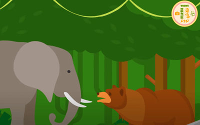

أهلا ومرحباً بكم متابعينا الكرام متابعي صفحة قصص اطفال قصة اليوم بعنوان قصة الفيل والأصدقاء
قصة مصورة جميلة وتثير انتباه الاطفال ونهايتها رائعة
ولمتابعة المزيد من قصص اطفال جديدة و قصص اطفال مكتوبة يمكنكم زيارة صفحة قصص اطفال قبل النوم

تجول فيل وحيد في الغابة بحثًا عن أصدقاء. صادف قردًا وسأله “هل ستكون صديقي ، أيها القرد؟”
فأجاب أنت كبير جدًا ولا يمكنك التأرجح على الأشجار مثلي. لذلك لا يمكنني أن أكون صديقك
ثم مضى الفيل في طريقه وصادف أرنبًا فسأله إن كان يوافق أن يكون صديقا له
فأجاب الأرنب أنت أكبر من أن تتسع داخل جحر. لا يمكنك أن تكون صديقي
ثم التقى الفيل بضفدع وسأله إن كان يقبل بأن يكون صديقه. فقال الضفدع أنت كبير جدًا وثقيل. لا يمكنك القفز مثلي
أنا آسف، لكن لايمكنك أن تكون صديقي. ثم سأل الفيل ثعلبًا، وحصل على نفس الرد ، أنه كبيرًا جدًا.
وفي اليوم التالي ، كانت جميع الحيوانات في الغابة تجري في خوف شديد
أوقف الفيل دبًا وسأل عما يحدث فقال له أن نمرًا يهاجم جميع الحيوانات
أراد الفيل إنقاذ الحيوانات الضعيفة الأخرى وذهب إلى النمر وقال له أرجوك يا سيدي ، أترك أصدقائي وشأنهم. لا تأكلهم
لم يستمع النمر وطلب من الفيل أن يهتم بشؤونه الخاصة
و نظرًا لعدم وجود طريقة أخرى لحل المشكلة، هدد الفيل النمر بركله بعيدا ان لم يترك أصدقائه
فهرب النمر و ترك الحيوانات
وقالوا له أنت حقا بالحجم المناسب لتكون صديقنا
وتعلموا أن الأصدقاء يأتون بكل الأشكال والأحجام
و من هذ القصة نتعلم يا أحباب أن نصاحب الناس على أخلاقهم وليس على أشكالهم
فقد قال رسول الله صلى الله عليه وسلم: إنَّ الله لاينظر إلى صوركم، ولا إلى أموالكم، ولكن ينظر إلى قلوبكم وأعمالكم
……………………………………..
انتهت القصة
دمتم بحفظ الله
[لقراءة قصص مصورة]
للحصول على مجموعة من قصص اطفال جديدة و قصص قبل النوم التي تحُث على الأخلاق الحسنة
يمكنكم تحميل تطبيق قصص الاطفال من متجر جوجل بلاي
لقراءة المزيد من قصص اطفال قبل النوم يمكنكم التوجه الى صفحة قصص أطفال و حكايات قبل النوم